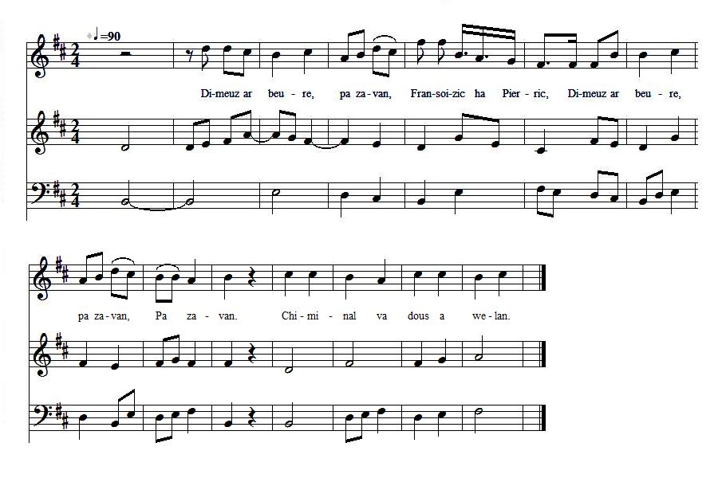

Fransoizic ha Pierric
Françoisette et Pierrot
Texte recueilli par François-Marie Luzel
auprès de Gillette Coat, à Plestin-les-Grèves
Publié dans "Sonioù Breizh-Izel", p.332

Mélodie
Inconnue, remplacée par "Kichennig ar milin"
Musique recueillie et harmonisée par Jef Le Penven,
dans "Kanaouennoù, 12 chansons bretonnes harmonisées à 4 voix mixtes"
Séquencement Christian Souchon (c) 2008
Source: "Bodadeg ar Sonerion" d'André Hemlin, via le site de M.Quentel, "Son ha ton" (voir "Liens")
VERSION "SONIOU BREIZ IZEL" |
VERSION "BARZHAZ BREIZH" |
English Translation of the Lyrics in the Luzel version of the song
|
When I get up in the morning Fanny and Pete When I get up in the morning When I get up I see my sweetheart's chimney. Seeing my sweetheart's chimney Is to me great satisfaction. - Fifty nights I spent Behind your door; you were not aware of it. |
The greatest relief to me Was your breath coming from your bed. Your breath, my precious jewel, Was soothing my heart. - I would have married since long Had I not feared to get a bad husband. - If you are scared of a bad husband, Take me, in God's name! |
I swear [to be a good husband], by my word and faith, This is the greatest oath I ever took... - Now, the both are husband and wife. And together they went to bed... With kicks and slaps Fanny is driven out of the house. With kicks and slaps! She is in for becoming a nun... - If you were afraid of a bad husband, Now, you are well-served, indeed! |